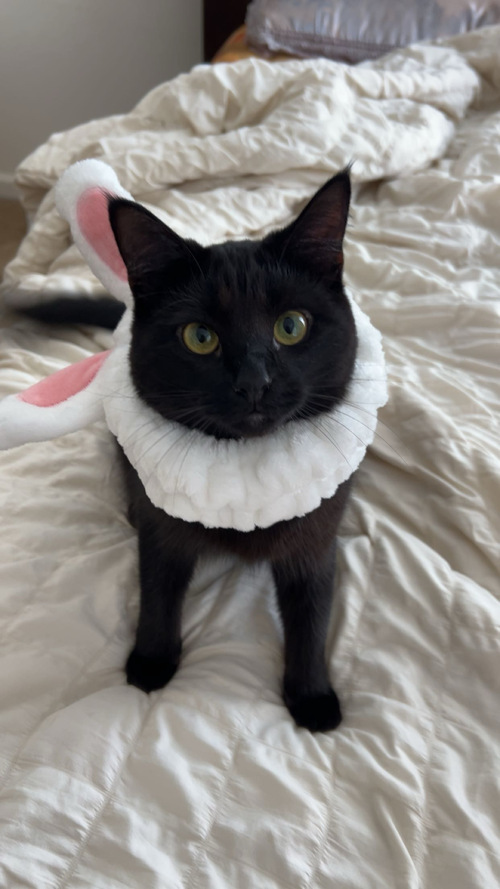

My name is alex and I am studying ICT at the University of Kentucky. I moved to america when i was 10 years old. I first stated living in ohio with a friends of my dad for about 8 months before moving ot Kentucky I went to henryclay high schoole and OMC community college for my senior year of high school before coming to university. At the community college I took a web development class and that is where I first started learning about web development.
hobbies
- Playing video game. I played a lot of COD and Fortnite during COVID then I switched to mobile games to play on the go like FIFA Mobile
- playing soccer. I am a big barcolana fan I have supporte and watched them since I was a child
- Watching movies. I love watching movies and TV Shows (white collar) is a tv show I recommend everyone.
- Travelling. As a college student I havent been able to travel a lot but when I do its always fun I really enjoy it.
Interests
I am very interested in cybersecurity. I have talked a lot about cybersecurity and how I got into cybersecurity through watching hacker movies.
I am also a fan of pets. I love pets even thorugh I dont have one of my own but when I move into my own place I would like to get a pet.(a cat)
My friends pet cat i babysat over the weekend
